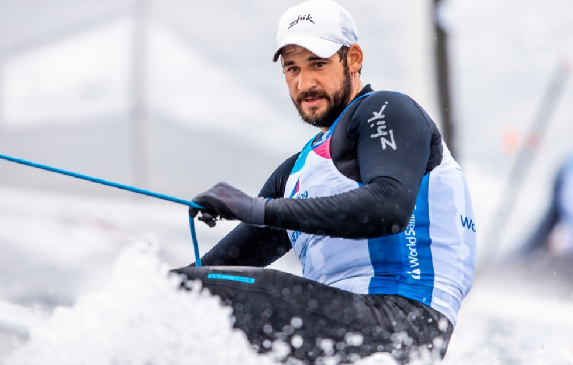
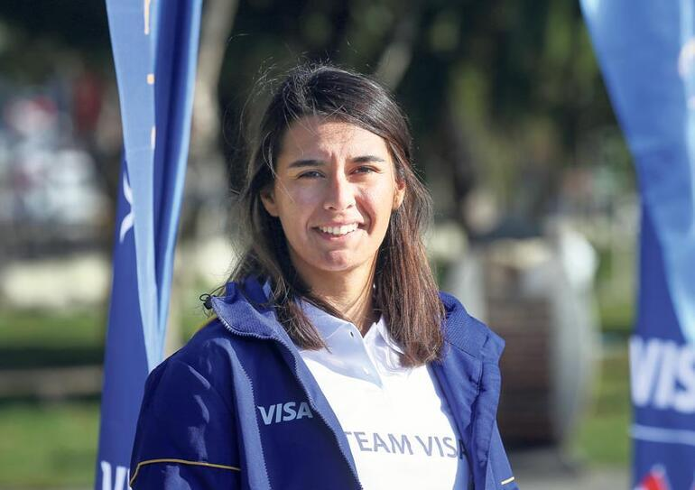

BESTE KAYNAKÇI

Beste Kaynakçı, milli yelkencidir. 30 Nisan 1994 tarihinde İzmir Konak’ta doğmuştur.2017 yılında Yeditepe Üniversitesi Beslenme ve Diyetetik Bölümü’nden mezun olmuştur. Ege Üniversitesi Spor Bilimleri Fakültesi Hareket ve Antrenman Anabilim Dalı’nda yüksek lisans öğrenimi görmektedir.
Ali Rıza Mete (ARM) Urla Yelken ve Gençlik Spor Kulübü’nün sporcusudur. Spora sekiz yaşında voleybola başlamıştır. 11 yaşında yelken branşına geçmiş ve 15 yaşında milli sporcu olmuştur. 2020 Tokyo Yaz Olimpiyat Oyunları’nda yelken sporunda Türkiye’yi temsil edecektir. Kariyerinde ulusal ve uluslararası şampiyonalarda kazanılmış madalyalar bulunmaktadır.
ALİCAN KAYNAR

30 Ekim 1988'de İstanbul'da doğdu. Alican yelken sporuna 6 yaşında Fenerbahçe Spor Kulübü'nde başladı. 6 Yıldır iyimser, 8 yıldır lazer sınıfındaydı. Sonra kariyerine finn sınıfında başladı.
27 Yıl boyunca kulübü Fenerbahçe Doğuş Yelken Takımı ve Türk Milli Takımı ile ulusal ve uluslararası alanda sayısız kupa ve madalya kazandı.
24 Yaşındayken olimpiyat oyunları için ilk çıkışını yaptı. 2012 Londra Olimpiyat Oyunları'nda 18., 2016 Rio Olimpiyat Oyunları'nda 13. ve 2020 Tokyo Olimpiyat Oyunları'nda 8. oldu.
Ayrıca 2022 yılında Dünya Yelken Organizasyon Kupası olacak olan "Yıldız Denizciler Altın Kupası" nda takım kaptanı unvanıyla mücadele edecek seçkin denizcilerden biridir.
ECEM GÜZEL

23 Şubat 1995 tarihinde İstanbul Pendik'tedoğan Güzel, Bodrum'dabüyüdü. Marmara Üniversitesi'ndespor idaresi öğrencisidir.Güzel, Türk Rivierası'ndakiBodrum'da bir yaz tatilinde 10 yaşında yelkenle ilgilenmeye başladı. Yelken kursuna katıldı; annesi Güzel'in eğitim masraflarını karşılamak için kredi almak zorunda kaldı.Optimist sandalının gençler için tasarlanmış bir tür olduğunu öğrendi ve genç yaşından dolayı o sınıfta yelken açtı. Era Yachting Bodrum kulübünde deneyim kazandı.
Güzel'in uluslararası yarışmalardaki tutkusunu fark eden İstanbulmerkezli Galatasaray Yelken kulübü, 2013 yılında bodrum'dan transfer oldu.
Güzel, 2013 yılında Kuzey Makedonya'nın Ohrikentinde düzenlenen 46'ncı Balkan Yelken Şampiyonası'nda gümüş madalya kazandı. Mart 2014'te Atina Eurolymp Haftası'nda ikinci oldu. Temmuz ayında İtalya'nın Nago-Torbolekentinde düzenlenen Laser Standard & Radial - Avrupa Gençler Şampiyonası'nda dokuzuncu olan Güzel, Ağustos ayında Fransa'nın Douarnenezkentinde düzenlenen Laser Radial & Standard - U21 Dünya Şampiyonası'nda altıncı oldu. [12] Eylül 2014'te Romanya'nın Constanțakentinde düzenlenen 47'nci Balkan Yelken Şampiyonası'nda Laser Radial sınıfında altın madalya kazanan Güzel, Aralık ayında Avustralya'da düzenlenen ISAF Sailing World Cup Melbourne'de yedinci oldu. [10] Eylül 2016'da Güzel, Yunanistan'da düzenlenen 49'uncu Balkan ve Açık Yelken Şampiyonası'nda altın madalya kazandı. 2017 Laser Radial Dünya Şampiyonası'nda37. Güzel, İspanya'nın Tarragonakentinde düzenlenen 2018 Akdeniz Oyunları'nda sekizinci oldu.
2018 Yelken Dünya Şampiyonası'ndabaşarısız olmasına rağmen Güzel, Japonya'nın Sakaiminatokentinde düzenlenen 2019 Kadınlar Laser Radyal Dünya Şampiyonası'nı 10. sırada tamamlayarak 2020 Yaz Olimpiyatları'ndayarışmaya hak kazandı. Avustralya'nın Melbournekentinde düzenlenen Coaches-Pre-WM-Regatta yarışmasında Laser Radial sınıfında bronz madalya aldı.